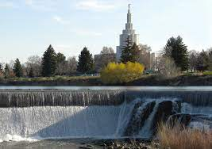

Idaho Falls
POPULATION: 61,459 (2019 Census)
ELEVATION: 4,744ft
Idaho Falls was founded in 1864. It is built around a portion of the Snake River. This provides the city with gorgeous scenery along what is known as "The Green Belt". It's location provides residents and visitors with close access to the Idaho Falls Zoo, Bear World and Yellowstone National Park.
Idaho Falls is home to the Chuckars (a minor league baseball team) and the famous ice cream shop known as Reed's Dairy. For more information on the history, check out Downtown's Museum of Idaho.
Current Events
DECEMBER
09 - Chamber Blood Drive: 1:00-6:00 PM
12 - 1st Annual Yule Ball: Masquerade: 6:00-11:00 PM
15 - Hope Lunch
17 - Bucked Up Ribbon Cutting: 12:00-1:00 PM
18 - Downtown Horse Drawn Trolly Rides: 1:00PM-12:00AM